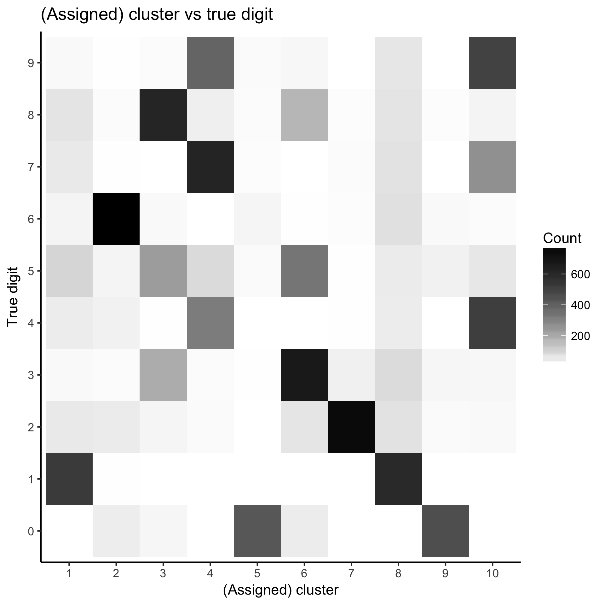
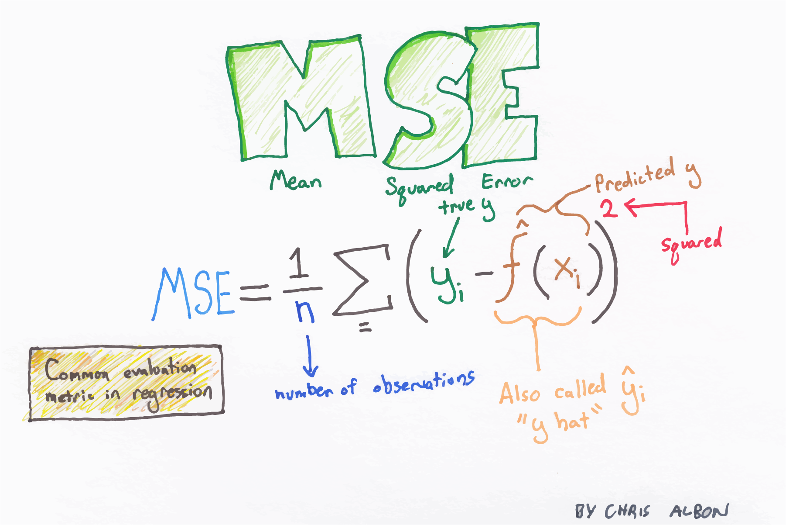

STAT/MATH 495: Advanced Data Analysis
Albert Y. Kim
Last updated on 2017-11-15
- Lecture numbering: The lectures are numbered according to the following rough topic outline:
BackgroundIntro to modelingSimple case with univariate predictors to start: splinesSampling/resampling, out-of-sample prediction, crossvalidationBias-variance tradeoff
Continuous outcomes ILOESS smootherRegression for prediction
Categorical outcomes i.e. classificationLogistic regression for prediction + ROC curvesk-Nearest NeighborsClassification and regression trees (CART)
- Continuous outcome II
Regularization/shrinkage methods: LASSO and ridge regression
- Unsupervised learning
k-Means Clustering- Principal components analysis
Other methodsBoosting and baggingRandom forestsNeural nets
- Source code: The code to build this webpage is accesible by clicking the GitHub icon on the top-right of the nav bar.
5.2 Principal components analysis
Thu 11/16
Announcements:
- (Tomorrow) Friday 11/17 9-11am Extra Office Hours in Frost Café cancelled. If you would like to bounce ideas for your final projects one last time before break, DM me on Slack and we’ll set something up for Thursday afternoon.
- Install
rasterpackage.
Problem set 10
Information
Important dates/times:
- Tue 11/14: Assigned.
- Tue 11/28 8:30am: Pull request submission
- Wed 11/29 9am: Feedback delivered by Andrew.
- Thu 11/30 8:30am: (Optional) revisions due.

You will enter the Sberbank Russian Housing Market Kaggle competition and fit a spline model to predict the outcome variable price_doc: the sale price of a piece of real estate. The data has been pre-downloaded and included in the PS10 repo in the course GitHub Organization.
- Teams: Individual
- Presentations: None
- Deliverables: One ready to submit pull request to the PS10 repo. At the very least, the following files should be modified/added: At the very least, the following files should be modified/added:
PS10.Rmd: This shouldPS10.html: The output ofPS10.Rmd. This will be the presentation file for a randomly chosen set of groups on Tue 9/19.README.md: Changerudeboybertin the URL to the GitHub ID of the team leader so that you can open your version ofPS10.htmlin a browser on Tuesday morning.screen_shot.pngorscreen_shot.jpg: A screenshot of your two Kaggle scores. You should be able to read both at same time from “My submissions” tab
4.3 Ridge regression
Tue 11/14
Announcements:
glmnetpackage vignette. In particular, note that we can do LASSO for linear, logisitic, and poisson regression. Note that for logistic/poisson regression, the model is fit in log-odds/log(outcome) space, so you need to convert back to original observation space using inverse-logit/exp.- How did I write out
model_formulafor PS10?names(train) %>% dput() %>% paste(collapse=" + ")and then pared it down!
Chalk talk
- 4.3 Ridge regression
4.2 More on LASSO regularization
Mon 11/13
Announcements:
- Go over Midterm II
- Final week of lectures based on new topics; See lecture outline.
- Project groups are set:
- Presentation order set today: See top of Syllabus
- Guidelines for presentation set in “Deliverables” section of final project description in syllabus.
Chalk talk
- 4.2 More on LASSO regularization: What’s on Quickstart guide
4.1 Intro to LASSO regularization
Tue 11/7
Announcements:
- Don’t forget to look at the flash cards I handed out while studying!
Chalk talk
- 4.1 Regularization
- Look at LASSO shiny app on Shiny Apps page
Midterm II review
Mon 11/6
Announcements:
- Please note the extra office hours at Frost Cafe in the syllabus.
- No problem set assigned this week. After Thursday work on your projects and comps proposals (Due Wed 11/15).
- I need to know your Final Project groups ASAP. If you haven’t already, team leader please create a team DM with myself and Andrew.
- Solutions to Problem Set 07 on ROC curves posted. In particular, read the “Comparison” subsection of “Build binary classifier”.
- Handed back quiz on “Weapons of Math Destruction” podcast from PS07. Two most chosen examples from podcast were 1) recidivism/criminal justice system 2) teacher evalutions.
Chalk talk
Midterm II review.
2.8 (Continuous outcomes I) Bias-variance tradeoff
Problem set 9
Information
\(k\)-means clustering
Important dates/times:
- Tue 11/1: Assigned
- Tue 11/7 8:30am: Pull request submission
- Wed 11/8 9am: Feedback delivered by Andrew
- Thu 11/9 8:30am: (Optional) revisions due
- Fri 11/10 4:30pm: Prof Ward’s talk “Mathematics for \(k\)-means clustering and beyond” in Seeley Mudd 206. See abstract in Lec 3.4
Details:
- Teams: Individual
- Presentations: None
- Deliverables: One ready to submit pull request to the PS09 repo. At the very least, the following files should be modified/added:
PS09.Rmd: Source codePS09.html: The output ofPS07.Rmd.README.md: Changerudeboybertin the URL to your GitHub ID so that both Andrew and I can open yourPS09.htmlin a browser.
5.1 (Unsupervised learning) \(k\)-means clustering
Tue 10/31
Announcements:
Chalk talk
5.1 \(k\)-means clustering
- Slide deck visualizing \(k\)-means clustering algorithm in \(p=2\) space.
Data for today
Famous MNIST handwritten digit data, available on Kaggle.

Using the k_means.R code available here, we can generate the following plot based on our \(k=10\) k-means clustering results:

So we have the following rough mapping:
- Cluster 1: Must be 1’s
- Cluster 2: Must be 6’s
- Cluster 3: Must be 8’s, altho not as forcefully sure.
- Cluster 4: Likely 7’s, but seems to be conflated with 4’s and 9’s
- Cluster 5: Must be 0’s
- Cluster 6: Must be 3’s
- Cluster 7: Must be 2’s
- Cluster 8: Must be 1’s. Again? Isn’t Cluster 1 also 1’s?
- Cluster 9: Must be 0’s.
- Cluster 10: Could be 4’s, 7’s, and 9’s again!
Remember:
- The “Cluster” numbers 1-10 have no relationship with the actual digits 0-9; these are merely the categorical labels used to indicate the clusters/groups. We could’ve just as acceptibly had cluster labels A-J.
- Given the random nature of the initiation of kmc, these results could differ between different runs of the algorithm.
- We are not modeling a fitted digit prediction \(\widehat{y} = \widehat{\mbox{digit}}\) as we are doing unsupervised learning. In fact, no where in our analyses is the information embedded in the human-tagged
labelvariable being used. In serious prediction situation, you would use this information. - Certain true digits cluster themselves very nicely: 1 (twice), 6, 2, 8, 0 (twice). What cluster corresponds to the 5’s?
- Note how the 4’s, 7’s, and 9’s aren’t that clear given their similarity when written.
3.7 Runtime and space complexity
Thu 10/26
Announcements:
- How to encode non-ordinal categorical variables for use in CART: covert every level of categorical variable to its own “binary dummy variable”. I didn’t know this had a name: “one-hot encoding”.

Chalk talk
3.7 Runtime and space complexity
Problem set 8
Information
You will (see Chalk Talk from Lec 3.7 on Thu 10/26)
Important dates/times:
- Tue 10/26: Assigned.
- Tue 10/31 8:30am:
- Pull request submission
- Wed 11/1 9am: Feedback delivered by Andrew.
- Thu 11/2 8:30am: (Optional) revisions due.
Details:
- Teams: Individual
- Presentations: None
- Deliverables: One ready to submit pull request to the PS08 repo. At the very least, the following files should be modified/added:
PS08.R: Source codefirstname_lastname.png: The saved graph
Tips
Don’t use read.csv(), but read_csv() from the readr package, which gets autoloaded with library(tidyverse)
read.csv vs read_csv. Thank you #tidyverse for giving me back 180 seconds of my life to waste on social media #rstats pic.twitter.com/OZxqEVbckZ
— Albert Y. Kim (@rudeboybert) October 26, 2017
3.6 Classification and regression trees
Tue 10/24
Announcements:
- Problem set stuff
- Quiz on podcast
- Problem set pull request
- Problem set 08 will involve a categorical outcome Kaggle competition. Posted later tonite.
- Finish knn
- Posted knn to Quickstart
- Finish “multi-class log-loss”
- New method: classification and regression trees (CART)
- Install
rpartpackage - Posted CART to Quickstart
- Install
Ethics discussion
The wisdom of Dr Ian Malcolm, resident PITA mathematician and “chaos theoretician” in Jurassic Park! Your scientists were so preoccupied with whether or not they could that they didn’t stop to think if they should.
Great discussion!
Great disc in STAT495 on ethics of #MachineLearning based on @mathbabedotorg's #WeaponsOfMathDestruction pic.twitter.com/xEk2zFQVeR
— Albert Y. Kim (@rudeboybert) October 24, 2017
Speaking of dinosaurs…
Code demo
library(tidyverse)
iris <- iris %>%
as_tibble() %>%
# Add ID column:
mutate(ID = 1:n()) %>%
select(ID, Species, Sepal.Length, Sepal.Width)
library(rpart)
model_formula <- as.formula(Species ~ Sepal.Length + Sepal.Width)
tree_parameters <- rpart.control(maxdepth = 3)
model_CART <- rpart(model_formula, data = iris, control=tree_parameters)
# Plot
plot(model_CART, margin=0.25)
text(model_CART, use.n = TRUE)
title("Predicting iris species using sepal length & width")
box()Chalk talk
3.6 Classification and regression trees (CART)
Exercises
- Using a sequence of
dplyrcommands, follow the path of the tree and prove to yourself that the values in the following nodes hold:- 1/5/1 (setosa, versicolor, virginica)
- 0/26/10
- Read the help file for
rpart.controland play around with different arguments that control the shape of the tree in thetree_parametersobject above. - Create a new numerical outcome variable
iris$is_setosa <- as.numeric(iris$Species == "setosa"), fit CART, and interpret the resulting tree.
3.5 More \(k\)-nearest neighbors
Mon 10/23
Announcements:
- Install
caretandMLmetricspackages
Chalk talk
3.5 \(k\)-nearest neighbors
Code demo
Play around with different \(k = 1, \ldots, 150\):
library(tidyverse)
library(caret)
library(gridExtra)
# Fit model ---------------------------------------------------------------
data(iris)
iris <- iris %>%
as_tibble() %>%
# Add ID column:
mutate(ID = 1:n()) %>%
select(ID, Species, Sepal.Length, Sepal.Width)
# What data looks like. Note: points jittered to break overplotting
ggplot(iris, aes(x=Sepal.Length, y=Sepal.Width)) +
geom_text(aes(label=ID, col=Species))
# Fit knn(k) model
k <- 3
model_formula <- as.formula(Species ~ Sepal.Length + Sepal.Width)
model_knn <- caret::knn3(model_formula, data=iris, k = k)
# Possible output 1: Majority rules vote winner ---------------------------
y_hat <- model_knn %>%
predict(newdata=iris, type="class")
y_hat
# Possible output 2: Keep fitted probabilities ----------------------------
# In other words, don't hold the vote!
p_hat_matrix <- model_knn %>%
predict(newdata=iris, type="prob") %>%
round(3)
View(p_hat_matrix)
# What's going on in row 64? Isn't this k=3 nearest neighbors?
p_hat_matrix[64,]
# Let's zoom in. What's going on?
ggplot(iris, aes(x=Sepal.Length, y=Sepal.Width)) +
geom_text(aes(label=ID, col=Species)) +
coord_cartesian(xlim=c(6, 6.2), ylim=c(2.8, 3.0))
# Convert to tidy data format and plot
p_hat_tidy <- p_hat_matrix %>%
as_tibble() %>%
bind_cols(iris, .) %>%
tidyr::gather(fitted_class, fitted_prob, -c(ID, Species, Sepal.Length, Sepal.Width)) %>%
arrange(ID, Species)
p_hat_tidy
# Here:
# -the color of the points always represent the true outcome y
# -the facets contain fitted probabilities for each of the 3 species of iris
# -the shade of the points represent the fitted probability of the species in
# the facet
p_hat_plot <- ggplot(p_hat_tidy, aes(x=Sepal.Length, y=Sepal.Width)) +
geom_point(aes(col=Species, alpha=fitted_prob)) +
facet_wrap(~fitted_class) +
labs(x="Sepal Length", y="Sepal Width", alpha="Fitted Prob", title="Fitted probabilities")
p_hat_plot
# Recall the truth:
truth_plot <- ggplot(iris, aes(x=Sepal.Length, y=Sepal.Width)) +
geom_point(aes(col=Species)) +
labs(x="Sepal Length", y="Sepal Width", alpha="Fitted Prob", title="True outcomes")
truth_plot
# Compare
layout <- matrix(c(1,1,2,2,2), nrow=1)
grid.arrange(truth_plot, p_hat_plot, ncol=2, layout_matrix = layout)Chalk talk
3.5 Multi-class log-loss function
- Used by several Kaggle competitions when outcome variable is categorical.
- Part of
MLmetricspackage to make it easier to compute notions of “score”/“error”. See list.
Code demo
library(MLmetrics)
# Possible output 1: Majority rules vote winner ---------------------------
# Proportion correct:
mean(iris$Species == y_hat)
MLmetrics::Accuracy(y_true = iris$Species, y_pred = y_hat)
MLmetrics::ConfusionMatrix(y_true = iris$Species, y_pred = y_hat)
# Possible output 2: Keep fitted probabilities ----------------------------
MLmetrics::MultiLogLoss(y_true = iris$Species, y_pred = p_hat_matrix)3.4 \(k\)-nearest neighbors
Thu 10/19
Announcements: Albert is calling an audible!
- Topic \(k\)-means clustering, an unsupervised learning technique, is now bumped up from Mon 11/13 to Mon 10/30 + Tue 10/31
- PS09 assigned on Tue 10/31, due Tue 11/7, will be on \(k\)-means clustering
- Why? Prof Rachel Ward of University of Texas at Austin will be giving a talk “Mathematics for \(k\)-means clustering and beyond” on Friday 11/10 4:30pm in Seeley Mudd 206.
PS06: Bias-variance tradeoff
- It took me 6 hours to figure it out \(MSE = \frac{1}{n}\sum_{i=1}^{n}\left(y_i - \widehat{y}_i\right)^2\) and not \(MSE = \frac{1}{n}\sum_{i=1}^{n}\left(f(x_i) - \widehat{y}_i\right)^2\)
- Question: Why are we doing this?
- Answer: Courtesy Obi-Wan Kenobi
- Slideshow:
Iris Data Set
- Classic data set in statistics and machine learning (Wikipedia). Introduced by the Fisher in 1936 paper “The use of multiple measurements in taxonomic problems as an example of linear discriminant analysis.”
- Categorical outcome \(y\): One of three species of iris flower
- 4 Predictor variables \(\vec{X}\):
- Sepal length & width in cm
- Petal length & width in cm
Outcome variable \(y\) images
| Setosa | Versicolor | Virginica |
|---|---|---|
 |
 |
Predictor variables \(\vec{X}\) image

Data in R
library(tidyverse)
iris %>%
as_tibble() %>%
tibble::rownames_to_column(var="ID") %>%
sample_n(5)| ID | Sepal.Length | Sepal.Width | Petal.Length | Petal.Width | Species |
|---|---|---|---|---|---|
| 94 | 5.0 | 2.3 | 3.3 | 1.0 | versicolor |
| 110 | 7.2 | 3.6 | 6.1 | 2.5 | virginica |
| 64 | 6.1 | 2.9 | 4.7 | 1.4 | versicolor |
| 15 | 5.8 | 4.0 | 1.2 | 0.2 | setosa |
| 69 | 6.2 | 2.2 | 4.5 | 1.5 | versicolor |
Problem set 7
Information
Important dates/times:
- Tue 10/17: Assigned.
- Tue 10/24 8:30am:
- Pull request submission
- A 10-15 minute essay question quiz
- Wed 10/25 9am: Feedback delivered by Andrew.
- Thu 10/26 8:30am: (Optional) revisions due.
There are two components to this week’s assignment.
- Code component: You will enter the Give Me Some Credit Kaggle competition and construct a binary classifier to predict whether or not someone experienced 90 days past due delinquency or worse in the last 2 years. Fork a copy of the PS07 repo in the course GitHub Organization and then clone it. Notes:
- Use only a single predictor variable chosen from
DebtRatio,age, orMonthlyIncomeand justify your choice. - Based on which every variable you chose, plot an ROC curve.
- Plot an ROC curve based on random guessing.
- Use only a single predictor variable chosen from
- Ethics of machine leanrning discussion component: Listen to Econ Talk podcast interview (time 1h11m) of Cathy O’Neil, author of Weapons of Math Destruction. There will be a 10-15 minute essay question quiz at the start of class on Tuesday 10/24 worth one tenth of your engagement grade (1% of your final grade).
Details:
- Teams: Individual
- Presentations: None
- Deliverables: One ready to submit pull request to the PS07 repo. At the very least, the following files should be modified/added:
PS07.Rmd: Source codePS07.html: The output ofPS07.Rmd.README.md: Changerudeboybertin the URL to your GitHub ID so that both Andrew and I can open yourPS07.htmlin a browser.submission.csvscreen_shot.pngorscreen_shot.jpg: A screenshot of your Kaggle ranking.
Example solutions
Open the following:
- Example solutions. In particular, read the Comparison section.
.Rmdsource code. Click on “Raw” button and save to.Rmdin yourPS07folder/RStudio project. Note: this takes a long time to Knit because of the “Extra” section at the end; comment this code out if you want to knit for yourself.
3.3 ROC curves
Tue 10/17
Announcements:
- Topic schedule for rest of semester roughly finalized.
- Go over solutions to exercises from Lec 3.2
Chalk talk
3.3 Receiver Operating Characterisitics (ROC) curves
Shiny App
Play around with decision threshold \(p^*\) in this Shiny App. Note:
- The \(\widehat{p}\)’s are computed using logistic regression with one predictor: height.
- Each choice of \(p^*\) yields a different confusion matrix/contingency matrix whose values we use to plot one point on the cuve.
- The Area Under the Curve is really high! Over 90%.
3.2 Logistic regression
Mon 10/16
Announcements:
- Tomorrow: Final project discussions + Prof. Wagaman visiting class at 9:30 to answer comps questions.
- How does one create a training set? Article from 2017/9/10 “In the Future, Warehouse Robots Will Learn on Their Own”
Exercise
Go over “Binary outcomes” section in Quickstart guide to fit/predict with logistic regression and answer these questions. The data is info on 59,946 OkCupid users who were living in San Francisco in June 2012. Note: permission to use this data was explicitly granted by OkCupid.
Questions
- After loading and wrangling the
profilesdata:- Create histograms of male and female heights using a bin width of 1 inch. IMO there is an irregularity in the male heights histogram. What could be the cause of it?
- Challenge question: There are 24106 females and 35808 males in this dataset (OkCupid has since allowed for more gender options). Based on the data, answer the question “Going from shorter to taller, at what height would you start guessing that an individual is male?” by creating a scatterplot of “observed proportion female” over height.
- Section 1.1.1: In code snippet
1.b)in the resulting point-by-pointaugment()table, why are there negative.fittedvalues? - Section 1.1.2: Wrangle the data so that we have all four values needed to compute the contingency table/confusion matrix from last lecture comparing your predictions vs truth. What value do you need?
- After looking at the Wikipedia entry on confusion matrices compute the:
- Accuracy = 1 - classification error rate
- False positive rate
- False negative rate
Solutions
Question 1.a): Histograms of male and female heights using a binwidth of 1 inch:
ggplot(profiles, aes(x=height)) +
geom_histogram(binwidth = 1) +
facet_wrap(~sex, nrow=2) +
labs(title="Self-reported heights for women vs men", x="height (inches)")Question 1.b): “Going from shorter to taller, at what height would you start guessing that an individual is male?”
proportion_female <- profiles %>%
# For each (height x sex) combo, return count
group_by(height, sex) %>%
summarise(n=n()) %>%
# Create new grouping structure to compute proportions:
group_by(height) %>%
mutate(prop = n/sum(n)) %>%
filter(sex == "f")
ggplot(proportion_female, aes(x=height, y=prop)) +
geom_line() +
labs(x="height (inches)", y="Proportion women", title="Proportion women for each height")Why is this so variable, especially at shorter and taller heights? Because of the small sample size. Let’s also mark the number of women for each height:
ggplot(proportion_female, aes(x=height, y=prop)) +
geom_line(alpha=0.2) +
geom_text(aes(label=n), size=5) +
labs(x="height (inches)", y="Proportion women", title="Proportion women for each height")Let’s add a horizontal line at 40.2%:
ggplot(proportion_female, aes(x=height, y=prop)) +
geom_line(alpha=0.2) +
geom_text(aes(label=n), size=5) +
labs(x="height (inches)", y="Proportion women", title="Proportion women for each height") +
geom_hline(yintercept = 0.402, col="red")We see that when we jump from 67 inches (5’7’‘~ 170.2cm) to 68 inches (5’8’’ ~ 172.7) the proportion female drops below 40.2%. Why did I use 40.2% and not the intuitive 50% as a cutoff? Because 24106/(24106+35808) = 40.2% of this population are women, and not 50%. So the appropriate baseline for comparison is 40.2%.
Question 2: The .fitted values are the fitted values in log-odds space \((-\infty, \infty)\). To convert back to probability space, we need to apply the inverse-logit function.
Question 3: Values for contingency table/confusion matrix. To compute this, we need a decision threshold \(p^*\):
p_star <- 0.5
model_logistic <- glm(y~height, data=profiles_train, family="binomial")
model_logistic %>%
broom::augment() %>%
as_tibble() %>%
mutate(
p_hat = 1/(1+exp(-.fitted)),
y_hat = p_hat >= p_star
) %>%
group_by(y, y_hat) %>%
summarise(n=n())| y | y_hat | n |
|---|---|---|
| 0 | FALSE | 15150 |
| 0 | TRUE | 2755 |
| 1 | FALSE | 2378 |
| 1 | TRUE | 9674 |
Question 4:
Recall that \(y=1\) indicates user was female.
- Accuracy = 1 - classification error rate: (15167+9754)/(15167+2734+2302+9754) = 83.1%
- False positive rate (rate at which men are predicted to be women): 2734/(2734+15167) = 15.3%
- False negative rate (rate at which women are predicted to be men): 2302/(2302+9754) = 19.1%
3.1 Starting categorical outcomes
Thu 10/12
Announcements:
- PS05:
- Discussion points from yesterday posted
- Poisson regression for count data
- Style guides: While not explicitly required in this class, something to definitely consider moving forward:
- Hadley Wickham’s summary of
tidyversestyle guide (recommended 5min read) - Google’s R style guide (a little outdated)
tidyversestyle guide (very detailed)
- Hadley Wickham’s summary of
Chalk talk
3.1 Starting categorical outcomes: Logistic regression
Transform Probability Space to logit Space
\[ \begin{align} \mbox{left-hand function} = \mbox{logit}(p) = \mbox{log-odds} &= \log\left(\frac{p}{1-p}\right)\\ \mbox{right-hand function} = \mbox{inverse-logit}(\alpha) &= \frac{\exp(\alpha)}{\exp(\alpha) + 1} = \frac{1}{1+ \exp(-\alpha)} \end{align} \]

Chalk talk
3.1: Topics
- Digression: Poisson regression
- Machine learning procedure
- Notion of error/score, in particular consider the following contingency table/confusion matrix from the Wikipedia page for Sensitivity and specificity
Problem set 6
Information
Important dates/times:
- Wed 10/11: Assigned.
- Tue 10/17 8:30am: Due via synchronized pull request. No presentations for PS06.
- Wed 10/18 9am: Feedback delivered by Andrew.
- Thu 10/19 8:30am: (Optional) revisions due.
\[ \mbox{MSE}\left[\widehat{f}(x)\right] = \mbox{Var}\left[\widehat{f}(x)\right] + \left(\mbox{Bias}\left[\widehat{f}(x)\right]\right)^2 + \sigma^2 \]
You will show that the above breakdown of the mean square error holds true for the two models fit in the handout from Lec 2.7.
- The learning goal of the assignment is not so much to show the breakdown holds; we know this is true by probabilistic fact from the derivation in Lec 2.7. Rather, the goal is to understand what is random and what is not in the above breakdown; you’ll only be able to show the above breakdown by simulation if you understand these.
- Much like
rnorm(100000, mean=5) %>% mean()should roughly equal 5, you will show the equality based onn_sim=100000simulations. - You won’t show this for all values on the domain of \(f()\), but only for \(x_0 = 0.95\).
Details:
- Teams: Individual
- Presentations: None
- Deliverables: One ready to submit pull request to the PS06 repo. At the very least, the following files should be modified/added:
PS06.Rmd: Source codePS06.html: The output ofPS06.Rmd.README.md: Changerudeboybertin the URL to your GitHub ID so that both Andrew and I can open yourPS06.htmlin a browser. Please test this URL before submitting your work!
Example solutions
Open the following:
- Handout on bias-variance tradeoff
- Example solutions
.Rmdsource code. Click on “Raw” button and save to.Rmdin yourPS06folder/RStudio project. Note: this takes a long time to Knit because of the “Extra” section at the end; comment this code out if you want to knit for yourself.
2.7 More bias-variance trade-off
Wed 10/11 (Monday schedule)
- Quiz on bias-variance tradeoff reading posted in Lec 2.6.
- Problem set 04 discussion/solutions posted.
- Problem set 05:
- At 9am, sychronized pull requests by team leaders.
- Recall because of odd schedule this week, feedback will be delivered by Thursday 10/12 9am. Your group can (optionally) resubmit your work by Friday 10/13 at 5pm.
- Problem set 05 (randomly chosen) group presentations.
Chalk talk
2.7 Bias-variance trade-off handouts:
- Source code
- Recall from the bias-variance tradeoff reading the image below.
- \(df=2\) is the bottom-left case
- \(df=99\) is the top-right case
- Sweet-spot is somewhere in between i.e. the balance/tradeoff. (Note: Top-left case is best-case scenario and bottom-right case is worst case scenario!)
Actual breakdown
Note:
- Not necessary to understand all steps of derivation for PS06.
- \(\widehat{y}\) is also denoted \(\widehat{f}(x)\). \(\widehat{f}(x)\) is a random variable.
- \(y=f(x)+\epsilon\) with \(\mathbb{E}\left[\epsilon\right] = 0\) and \(\mbox{Var}[\epsilon] = \sigma\). Hence \(y\) is random as well.
- The variation is over sample to sample.
\[ \begin{aligned} \mbox{MSE}\left[\widehat{f}(x)\right] &= \mathbb{E}\left[\left( y - \widehat{f}(x) \right)^2\right]= \mathbb{E}\left[\left( y^2 - 2 y\widehat{f}(x) + \widehat{f}(x)^2 \right)\right]\\ &= \left( \mathbb{E}\left[ y^2 \right]\right) + \left(\mathbb{E}\left[ \widehat{f}(x)^2 \right]\right) - \left(\mathbb{E}\left[ 2y\widehat{f}(x) \right]\right) \mbox{ by linearity of expectations } \\ &= \left( \mathbb{E}\left[ y^2 \right]\right) + \left(\mathbb{E}\left[ \widehat{f}(x)^2 \right]\right) - \left(\mathbb{E}\left[ 2(f(x)+\epsilon)\widehat{f}(x) \right]\right) \mbox{ since } y = f(x)+\epsilon\\ &= \left( \mathbb{E}\left[ y^2 \right]\right) + \left(\mathbb{E}\left[ \widehat{f}(x)^2 \right]\right) - \left(\mathbb{E}\left[ 2f(x)\widehat{f}(x) \right] + \mathbb{E}\left[ 2\epsilon\widehat{f}(x) \right]\right) \\ &= \left( \mathbb{E}\left[ y^2 \right]\right) + \left(\mathbb{E}\left[ \widehat{f}(x)^2 \right]\right) - 2f(x)\mathbb{E}\left[ \widehat{f}(x) \right] - 2\mathbb{E}\left[ \epsilon\widehat{f}(x) \right] \mbox{ since } \mathbb{E}\left[aX\right] = a\mathbb{E}\left[X\right] \mbox{ for } a \in \mathbb{R}\\ &= \left( \mathbb{E}\left[ y^2 \right]\right) + \left(\mathbb{E}\left[ \widehat{f}(x)^2 \right]\right) - 2f(x)\mathbb{E}\left[ \widehat{f}(x) \right] - 2\mathbb{E}\left[\epsilon \right]\mathbb{E}\left[\widehat{f}(x) \right] \mbox{ since } \mathbb{E}\left[XY\right] = \mathbb{E}\left[X\right]\mathbb{E}\left[Y\right] \mbox{ if }X,Y \mbox{ are independent}\\ &= \left( \mathbb{E}\left[ y^2 \right]\right) + \left(\mathbb{E}\left[ \widehat{f}(x)^2 \right]\right) - 2f(x)\mathbb{E}\left[ \widehat{f}(x) \right] - 0 \mbox{ since } \mathbb{E}\left[\epsilon\right]=0\\ &= \left( \mbox{Var}\left[ y \right] + \mathbb{E}\left[y\right]^2 \right) + \left(\mbox{Var}\left[ \widehat{f}(x) \right] + \mathbb{E}\left[ \widehat{f}(x) \right]^2\right) - 2f(x)\mathbb{E}\left[ \widehat{f}(x) \right] \mbox{ since } \mbox{Var}\left[X\right] = \mathbb{E}\left[X^2\right] - \mathbb{E}\left[X\right]^2\\ &= \left( \mbox{Var}\left[ y \right] + \mathbb{E}\left[f(x) + \epsilon\right]^2 \right) + \left(\mbox{Var}\left[ \widehat{f}(x) \right] + \mathbb{E}\left[ \widehat{f}(x) \right]^2\right) - 2f(x)\mathbb{E}\left[ \widehat{f}(x) \right]\\ &= \left( \mbox{Var}\left[ y \right] + \mathbb{E}\left[f(x)\right]^2 + 0 \right) + \left(\mbox{Var}\left[ \widehat{f}(x) \right] + \mathbb{E}\left[ \widehat{f}(x) \right]^2\right) - 2f(x)\mathbb{E}\left[ \widehat{f}(x) \right] \mbox{ since } \mathbb{E}\left[\epsilon\right] = 0\\ &= \mbox{Var}\left[ y \right] + \mbox{Var}\left[ \widehat{f}(x) \right] + \left( f(x)^2 - 2f(x)\mathbb{E}\left[ \widehat{f}(x) \right] + \mathbb{E}\left[ \widehat{f}(x) \right]^2 \right)\\ &= \mbox{Var}\left[ y \right] + \mbox{Var}\left[ \widehat{f}(x) \right] + \left( f(x) - \mathbb{E}\left[\widehat{f}(x) \right] \right)^2 \\ &= \mbox{Var}\left[ y\right] + \mbox{Var}\left[ \widehat{f}(x) \right] + \left( \mathbb{E}\left[f(x)-\widehat{f}(x) \right] \right)^2 \mbox{ since } \mathbb{E}\left[a + X \right] = a + \mathbb{E}\left[X\right] \mbox{ for } a \in \mathbb{R}\\ &= \sigma^2 + \mbox{Var}\left[ \widehat{f}(x) \right] + \left( \mbox{Bias}\left[ \widehat{f}(x) \right] \right)^2 \mbox{ since } \mbox{Var}\left[ y\right] = \mbox{Var}\left[ f(x)+\epsilon\right] = \mbox{Var}\left[ \epsilon \right] = \sigma^2\\ \end{aligned} \]
Problem set 5
Information
Assigned on Tue 10/3, due on Wed 10/11 (Monday schedule) 9am at which point there will be synchronized pull requests.

You will enter the Bike Sharing Demand Kaggle competition and fit a linear regression model to predict the number of rentals per hour, however using only 3 predictor variables. Fork a copy of the PS05 repo in the course GitHub Organization and then clone it in whatever version of RStudio you like. The focus of this exercise is to argue to decision makers why your 3 chosen variables provide the most “bang for your buck” in predicting bikeshare demand.
- Teams: 2-3 people at your choosing. Once you’ve selected your group designate one person as team leader who has not previously been a team leader, who will:
- Create a Slack DM that includes Albert, Andrew Kim (TA), and all team members. So far:
- Team A: Sarah T, Jonathan, Timothy
- Team B: Christien, Harrison
- Team C: Brendan, Leonard, Vickie
- Team D: Jenn, Pei, Anthony
- Team E: Meredith, Sara, Brenna
- Team F: Kiryu, Abbas, Caleb
- Team G: Meron, Tasheena, Wayne
- Team H:
- Submit a single pull request on behalf of the group.
- Submit a single submission to Kaggle on behalf of the group.
- Create a Slack DM that includes Albert, Andrew Kim (TA), and all team members. So far:
- Deliverables: One ready to submit pull request to the PS05 repo (recall the GitHub submission process). At the very least, the following files should be modified/added:
PS05.Rmd: This should- Be well-commented and completely reproducible.
- Involve an exploratory data analysis arguing why you chose the three variables you did.
PS05.html: The output ofPS05.Rmd. This will be the presentation file for a randomly chosen set of groups on Wed 10/11.README.md: Changerudeboybertin the URL to the GitHub ID of the team leader so that you can open your team’s version ofPS05.htmlin a browser on Tuesday morning.submission.csvscreen_shot.pngorscreen_shot.jpg: A screenshot of your Kaggle ranking.
- Feedback will be delivered by Thursday 10/12 9am. Your group can resubmit your work by Friday 10/13 at 5pm.
- Tips:
- Think about the projection onto the sheet exercise. What variables provide the most “bang for your buck” for understanding what’s behind the sheet, in this case, the mechanism that determines bikeshare demand.
- Again, do not worry about your score. This problem set is more about process than product.
- Your decision process for determining which 3 to use can be based exclusively on your EDA. However, if you are looking for something “less unsystematic”, you can use the approaches in the ISLR readings for Chapter 6 listed above; this kind of approach is strictly optional.
Presentations
- Christien, Harrison. Comments:
- Consider adding a
geom_smooth()to all scatterplots to really pick out signal from noise. - It’s always worth considering combining levels of a categorical variable to have fewer. For example, instead of one level for each hour, combine hours to get levels “night, morning rush, daytime, night rush”
- Consider adding a
- Meredith, Sara, Brenna
- Always worthwhile to at least look at a visualization of just the outcome variable. i.e. If you had no other information (no predictor information), what would you guess?
- Meredith’s question: How to you pick which varibles to include in model in a less unsystematic fashion? Model selection! While taking a “choose those variables that are statistically significant” approach might still be valid, I feel that using “does adding a variable decrease the prediction error (ex: MSE) enough to warrant the extra complexity of adding that variable?” approach is more in line with “modeling for prediction.”
2.6 Bias-variance trade-off
Tue 10/3
Announcements:
- Test out RStudio Shared Projects. Executive summary: it’s not quite using R in “Google Docs”, but rather “Google Doc”-like collaborative editing functionality in RStudio.
- Note on model selection: Read ISLR Chapters 6 thru to the beginning of 6.2 (book pages 203-214, PDF pages 217-228) for a discussion on “model selection”: how to select which predictors to use in a final regression model.
- Quiz on Wed 10/11 (Monday schedule) after PS05 submission, worth one tenth of participation grade = 1% of final grade. Read the following explanation of the bias-variance tradeoff and be prepared to answer questions on it.
Chalk talk
- 2.6 Finish PS03 discussion: How to pick optimal degrees of freedom \(df^*\)
Back to splines
Let’s look at:
- Three of the splines models from Lecture 1.6, however for only 100 randomly sampled points \(y=f(x)+\epsilon\) to make the plots less dense
- Plus an extreme case of “perfect” fitting
- There is no new sample of points being collected nor crossvalidation going on here; just take the points and fit a model.
Chalk talk
- 2.6 Bias-Variance Trade-Off
2.5 Feedback on PS03 + Midterm I review
Mon 10/2
Announcements:
- Via GitHub Education get a number of free private repositories and other benefits.
2.4 Feedback on PS02
Thu 9/29
Announcements:
- Note new “Quickstart” tab in nav bar. For every model we see it will contain input/output/code info for:
- Fitting model
- Making predictions
- Comps and final project information
- Comps information will be mailed out Oct 10th or 11th.
- Prof. Amy Wagaman will be coming to class on Tue 10/17 to answer any questions about comps.
- Final project information will be finalized around these dates.
- Information session for statistics and biostatistics grqduate programs
- Where: Merrill 300A.
- When: Friday, October 6 12:00 pm. A light lunch will be served.
- More information here.
- Plotly example
library(tidyverse)
library(plotly)
library(nycflights13)
flights_sample <- flights %>%
sample_n(100)
delays_plot <- ggplot(flights_sample, aes(x=dep_delay, y=arr_delay)) +
geom_point()
# Hover your mouse over the resulting plot
ggplotly(delays_plot)Chalk talk
Problem set 2 feedback
Problem set 3
Look at the image for Problem set 3, and then answer these two questions with your seatmates.
library(tidyverse)
mtcars <- mtcars %>%
# A tibble is very similar to a data frame, but when you view its contents
# in the console, it only prints out about 30 rows
as_tibble() %>%
mutate(ID = 1:n()) %>%
select(ID, mpg, hp)
# Number of folds
k <- 5
# Q1: What's the difference between these two in terms of crossvalidation?
# Hint: table() function to get frequency table
fold_scheme_1 <- sample(1:k, size=nrow(mtcars), replace = TRUE)
fold_scheme_2 <- rep(1:k, len=nrow(mtcars))
# A1:
# -fold_scheme_2 has roughly equal numbers of observations in each fold
# -fold_scheme_1 only has equal numbers of observations in each fold in
# expectation
table(fold_scheme_1); table(fold_scheme_2)
mtcars %>%
# Q2: Why do we sample_frac 100% first?
sample_frac(1) %>%
mutate(fold = rep(1:k, len=n()))
# A1: This effectively randomizes the fold assignment by first shuffling the
# rows. Say we didn't do this and mtcars had an inherent ordering to it?
# Then our fold assignment would not be at random!Problem set 4
Information
Assigned on Tue 9/26, due on Tue 10/3 9am at which point there will be synchronized pull requests.
You will fit your first model with multiple predictors!
- Details:
- Teams: Individual
- Presentation: Done
- Revision round: None
- Deliverables: One ready to submit pull request to the PS04 repo (recall the GitHub submission process). At the very least, the following files should be modified/added:
PS04.Rmd: Your workPS04.html: The output ofPS04.Rmd.README.md: Changerudeboybertin the URL to the GitHub ID so that you can openPS04.htmlin a browser.
Example solutions
- HTML output
.Rmdsource code. Click on “Raw” button and save to.Rmdin yourPS04folder/RStudio project.- Overall comments:
- Note, all our conclusions have to be taken with a grain of salt as I didn’t add the variables in an arbitrary order from
model1tomodel7! They were added in order determined by the variable selection inherent to the LASSO method, from “most informative” to “least”. More when we cover regularization methods. - Overfitting is an issue not so much when the number of observations \(n\) in the training set is small relative to the number of observations in the test set, but when \(n\) is small relative to \(p\), the number of predictors used! Again, more when we see LASSO.
- Keep in mind the “Texas Sharpshooter fallacy” was only an analogy I drew for comparison, and not a machine learning specific term.
- Note, all our conclusions have to be taken with a grain of salt as I didn’t add the variables in an arbitrary order from
2.3 Regression for prediction
Tue 9/26
Announcements:
- Since there are no presentations/discussions today for PS03, no revisions due on Thursday.
- Pull request is now due at 5pm today.
- Extra office hours today from 1:30-3pm in Seeley Mudd 208.
- Install
plotlypackage
Chalk talk
2.3 Regression for prediction
Regression quickstart guide
Moved to Quickstart tab above.
EDA of problem set 4 data + Shiny app
Let’s do an exploratory data analysis of the data for problem set 4. For \(i=1, \ldots, 400\) individuals, we are interested in their credit card balance. Alas, no sampling information is provided, so we can’t make any statements on the generalizability of this analysis. Recall our model formulation: \(y_i = f(\vec{x}_i) + \epsilon_i\):
- \(y_i\): Credit card balance
- \(x_{1,i}\): Income in $10K
- \(x_{2,i}\): Credit limit in $
- \(x_{3,i}\): Credit rating
- \(x_{4,i}\): Age
- \(x_{5,i}\): Number of credit cards
- \(x_{6,i}\): Years of education
library(tidyverse)
credit <- read_csv("http://www-bcf.usc.edu/~gareth/ISL/Credit.csv") %>%
select(-X1) %>%
mutate(ID = 1:n()) %>%
select(ID, Balance, Income, Limit, Rating, Age, Cards, Education)Read the contents of this Shiny App up to just before “Shrinking \(\beta\) Coefficients via LASSO” (which we will cover later).
2.2 A step back: StitchFix
Mon 9/25
Announcements:
- Explain GitHub collaborator vs GitHub pull request
- Problem set 02 feedback and example solutions given tomorrow.
- Today: 2.2
Regression for predictionA step back
Chalk talk
2.2 A step back. Recall our “projection onto the sheet” exercise
StitchFix
- Disclosure: I’m not being compensated by StitchFix.
- Filed for an IPO (to start trading on the stock market) in July 2017.
- Feature on Good Morning America; watch it thru the lens of
- \(y=f(\vec{x})+\epsilon\)
- What machine learning/data science tries to do

Today’s exercise
- Go to Stitch Fix and individually complete the “style quiz” for your gender; I just like their approach (their blog for example).
- Log out and using a different email address complete the “style quiz” for the opposite gender and note the major differences.
- Shout out to Jeff L for https://10minutemail.com/
- Communicate with your seatmates every step of the way; I’ll poll some groups for their observations.
- Again, view all this thru the lens of:
- \(y=f(\vec{x})+\epsilon\)
- What machine learning/data science tries to do
Important questions
- The ethics of StitchFix and predictive machine learning in general: What are we predicting, but also what are we reinforcing?
- Later in course: Weapons of Math Destruction.

2.1 Local regression (LOESS)
Thu 9/21
Before class:
- Install the following packages:
fivethirtyeight: Data from the articles on FiveThirtyEightnycflights13: Info for all 336K domestic flights that left an NYC airport in 2013 (JFK, EWR, or LGA)
- AC students: Start networking! Have your name and LinkedIn profile appear on the Amherst website by filling out this Google Form. Recruiters pay 💵💶💲 to LinkedIn to be able to do targeted 🔍s of potential hires!
Announcements:
- Amherst College Department of Mathematics and Statistics Amherst College Statistics Colloquia tonight.
- Title: Lessons for official statistics production around the world from the experience of Greece
- Speaker: Andreas Georgiou ‘83, Visiting Lecturer in Economics Amherst College (speaker background)
- When/where: Thursday, September 21, 2017 7:00 pm in Seeley Mudd 206.
- Abstract: The seminar will address what lessons can be gleaned from the experience with official statistics production in Greece, both in the period up to the onset of the debt crisis and since then. The seminar will discuss lessons about the appropriate institutional setting, legal framework, statistical culture and statistical practices.
- Updated/clarified syllabus to reflect:
- Typical problem set timeline under problem sets
- Expectations on readings under materials/readings
- Add to \(k=2\) CV pseudocode chalk talk from Lec 1.7: using results of CV to then make appropriate predictions.
- Starting topic 2 today: Continuous outcomes part I. We’ll come back to the final subtopic of topic 1, the bias-variance tradeoff, later.
Digression: Chalk talk
2.1: \(\log()\) and \(\log_{10}()\) transformations.
Digression: The importance of log-transformations
Let’s consider a set of post-2000 movies from the bechdel data set (type ?bechdel for details) and plot:
- x-axis: movie budget (in 2013-inflation adjusted US dollars)
- y-axis: domestic gross (in 2013-inflation adjusted US dollars)
library(tidyverse)
library(fivethirtyeight)
bechdel_2000 <- bechdel %>%
filter(year >= 2000)
ggplot(bechdel_2000, aes(x=budget_2013, y=domgross_2013)) +
geom_point() +
labs(x="Budget", y="Domestic Gross")We see there is a right-skew to both the x and y-values. This is because we are comparing big budget Hollywood blockbusters with (likely) lower budget independent films. Hence, it’s really hard to see what’s going on at the lower-end of the budget scale. Let’s unskew both variables and compare not absolute differences, but rather, relative differences i.e. differences in “order of magnitude” using a log10() transformation:
ggplot(bechdel_2000, aes(x=log10(budget_2013), y=log10(domgross_2013))) +
geom_point() +
labs(x="log10(Budget)", y="log10(Domestic Gross)")We can see a little better what’s going on at the lower end of the budget scale. However the values on the axes require a little thinking to process. For example at \(x=7\), this corresponds to movies with a budget of \(10^7 = 10,000,000\) dollars. So instead, let’s rescale both axes so that they display the data in their original units.
ggplot(bechdel_2000, aes(x=budget_2013, y=domgross_2013)) +
geom_point() +
scale_x_log10() +
scale_y_log10() +
labs(x="Budget (log10-scale)", y="Domestic Gross (log10-scale)")Note that
- The two plots are identical, but the values on the axes are different.
- In the rescaled x and y axes plot, equivalent distances on each axes correspond to not equivalent absolute differences, but equivalent relative/multiplicative differences. So for example, the horizontal distance on the plot from Budget =
1e+05= \(10^5\) to Budget =1e+06= \(10^6\) is equal to the horizontal distance on the plot from Budget =1e+06= \(10^6\) to Budget =1e+07= \(10^7\).
Local regression: executive summary via .gif

Chalk talk
2.1 Local regression i.e. LOESS AKA LOWESS
Corresponding book chapters
- ISLR: 7.6
- CASI: 19.8
Using loess()
Let’s fit a LOESS smoother model to
- x: (top of the hour) temperature recorded for flight
- y: departure delay for flight
on 1000 randomly sampled flights whose (x,y) values aren’t missing. Commands:
- Fit a model:
loess(y~x, data)(Note there is also alowess()command, but AFAIK there is no convenientpredict()function). - Predict based on a model:
predict(model_loess, newdata)
# Install this package:
library(tidyverse)
library(nycflights13)
library(broom)
# Let's join flight and join it with weather data after setting the seed value
# for the random number generator to ensure we have "replicable randomness"
set.seed(76)
flights_sample <- flights %>%
left_join(weather, by=c("month", "day", "hour", "origin")) %>%
filter(!is.na(dep_delay) & !is.na(temp)) %>%
sample_n(1000) %>%
select(temp, dep_delay) %>%
mutate(ID = 1:n())
# Create disjoint training and test data sets of size 500 each:
flights_sample_train <- flights_sample %>%
sample_n(500)
flights_sample_test <- flights_sample %>%
anti_join(flights_sample_train, by="ID")
# 1. Fit model
model_loess <- loess(dep_delay ~ temp, data=flights_sample_train)
# The next two lines take the fitted model and output a data frame with the
# original (x,y) values, but also
# * y_hat in the column .fitted.
# * y - y_hat = residual in the column .reside
# You can ignore the warnings about purrr
model_loess_df <- model_loess %>%
broom::augment()
View(model_loess_df)
# Plot
ggplot(model_loess_df, aes(x=temp)) +
geom_point(aes(y=dep_delay)) +
geom_line(aes(y=.fitted), col="red", size=1)
# 2. Pretend for a moment you don't know the true y = dep_delay, take the
# previously fitted model and make predictions on test set:
flights_sample_test <- flights_sample_test %>%
mutate(dep_delay_hat = predict(model_loess, newdata=flights_sample_test))
# Now let's stop pretending and compare our predictions (red points) to the
# truth (black points)
ggplot(flights_sample_test, aes(x=temp)) +
geom_point(aes(y=dep_delay)) +
geom_point(aes(y=dep_delay_hat), col="red", size=1)
# Now let's evaluate the RMSE
flights_sample_test %>%
summarise(MSE = mean((dep_delay - dep_delay_hat)^2)) %>%
mutate(RMSE = sqrt(MSE))geom_smooth() uses LOESS when n < 1000
Look at the help file ?ggplot2::stat_smooth under method: default for n<1000 is loess.
# When more than 1000 obs, geom_smooth uses another method
dim(flights_sample)
ggplot(flights_sample, aes(x=temp, y=dep_delay)) +
geom_point() +
geom_smooth(se=FALSE, col="red", size=1)
# When less than 1000 obs, geom_smooth uses LOESS
dim(flights_sample_train)
ggplot(flights_sample_train, aes(x=temp, y=dep_delay)) +
geom_point() +
geom_smooth(se=FALSE, col="red", size=1)
# How do I "tune" a LOESS smoother? Play around with the span value below:
ggplot(flights_sample_train, aes(x=temp, y=dep_delay)) +
geom_point() +
geom_smooth(se=FALSE, col="red", size=1, span=0.2)Problem set 3
Information
Assigned on Thu 9/19, due on Tue 9/26 9am at which point there will be synchronized pull requests.

Baby’s first crossvalidation! You will implement from scratch a full crossvalidation and use it to find the splines model with the best out-of-sample predictive ability in terms of the Root Mean Squared Error (RMSE). The data include the following variables:
IDunique identifier variablexunivariate predictor of n=3000 equally spaced values between -10 and 90youtcome variable generated from \(y = f(x) + \epsilon\) where- \(\epsilon\) is a random variable distributed with mean 0 and standard deviation \(\sigma\)
- Both \(f\) and \(\sigma\) are only known by Albert! Not the same as the video in Lecture 1.3.
Notes:
- Teams: Individual. I highly recommend you work in groups especially for the planning and eventually coding questions, but the ultimate code you submit should be your own.
- Deliverables: One ready to submit pull request to the PS03 repo (recall the GitHub submission process). At the very least, the following files should be modified/added:
PS03.Rmd: Your work.PS03.html: The output ofPS03.Rmd. No presentations for this problem set.README.md: Changerudeboybertin the URL to the GitHub ID so that you can open your version ofPS03.htmlin a browser easily.
- Tips:
- We’re ramping up the coding in this assignment! Don’t spin your wheels!
- Pseudocode
- Don’t start coding right away! Make a plan of attack using pseudocode that is language independent:

- You don’t want to conflate the what (the algorithm) and the how (the code) of the problem set. Lay out the algorithm on paper, blackboard, whiteboard, etc, first!
- In exams, you won’t be asked to write code, but rather pseudocode.
- Don’t start coding right away! Make a plan of attack using pseudocode that is language independent:
Example solutions
- HTML output
.Rmdsource code. Click on “Raw” button and save to.Rmdin yourPS03folder/RStudio project.
1.7 Crossvalidation
Tue 9/19
Announcements:
- Tip of the day: Another reason I’m a big fan of Slack, quick videoconferencing with screensharing directly in Slack using appear.in. In a DM type
/appear NAME_OF_UNIQUE_CONFERENCE_ROOM. Ex:/appear purple_monkey_dishwasher. - Problem set 02 presentations! Under Problem set 2 section.
Chalk talk
1.7 Crossvalidation
Corresponding book chapters
- ISLR: [5, 5.1.3] (Start of Chapter 5, through to the end of 5.1.3, stop just before 5.1.4)
- CASI: [12, 12.2]
1.6 Texas sharpshooter fallacy
Mon 9/18
Announcements:
- Tip of the day: Keyboard shortcut
%>%with command+shift+m on macOS and ctrl+shift+m on windows. - Philosophical fallacy of the day. “Texas Sharpshooter Fallacy”: When an argument is made and confirmed using the same set of information. Watch first 50s of this video: https://www.youtube.com/embed/_tcBsryYd6s
Chalk talk
1.6 Texas sharpshooter fallacy scenarios
- Shooting at a barn
- Science
- Machine learning in general
Scenario D)
Let’s call the following example “Scenario D) Splines”. Recall from our Intro to Splines lecture the different fitted models based on different degrees of freedom (i.e. different numbers of knots).
Scenario D): Score
Let’s define a notion of “score” to evaluate how good the above fits are: mean squared error (MSE). Image courtesy Chris Albon’s excellent Machine Learning Flashcards.

Chalk talk
1.6 Mean Squared Error
Scenario D)
Here are the Root Mean Squared Errors for the plot above. df=50 has lowest RMSE. Is df=50 for out-of-sample prediction? What did the Texas Sharpshooter Fallacy say in the machine learning case?
| df | RMSE |
|---|---|
| 2 | 2.935 |
| 10 | 1.874 |
| 25 | 1.834 |
| 50 | 1.784 |
Chalk talk
1.6 The “rather” of Scenario D) (to avoid the Texas Sharpshooter Fallacy).
1.5 The theory of splines + resampling
Thu 9/14
Announcements:
- “Gah! I can’t tell who you are from your Slack names!” Please go to: “STAT 495 Amherst…” on top left of Slack -> “Preferences” -> “Messages & Media” -> “Names” -> Click the “Full & display names” radio button.
- Problem set 01 feedback given below.

Chalk talk
1.5 Splines
How are splines curves fit?
How to obtain the fitted \(\widehat{\beta}_0\), \(\widehat{\beta}_1\), \(\widehat{\beta}_2\), and \(\widehat{\beta}_3\) necessary for all \(K+1\) cubic polynomials \[ \widehat{y}_i = \widehat{\beta}_0 + \widehat{\beta}_1 x_i + \widehat{\beta}_2 x_i^2 + \widehat{\beta}_3 x_i^3 \]
for each interval? A combination of calculus (derivatives) and linear algebra (solving a system of equations). See this PDF if you’re curious.
Sampling paradigm

Chalk talk
1.5 Sampling
Resampling paradigm

Moral: You want the
- the process represented by the red dashed line/arrow (resampling) to mimic as much as possible
- the process represented by the black dashed line/arrow (sampling)
Problem set 2
Information
Assigned on Thu 9/12, due on Tue 9/19 9am at which point there will be synchronized pull requests.
You will enter the Sberbank Russian Housing Market Kaggle competition and fit a spline model to predict the outcome variable price_doc: the sale price of a piece of real estate. The data has been pre-downloaded and included in the PS02 repo in the course GitHub Organization.
- Teams: 2-3 people at your choosing. Once you’ve selected your group designate one person as team leader, who will:
- Create a Slack DM that includes Albert, Andrew Kim (TA), and all team members. So far:
- Team A: Sara (no “h”), Meredith, Brenna
- Team B: Jeff, Luke, Andrew
- Team C: Jonathan, Sarah (with “h”), Timothy
- Team D: Pei, Jenn, Anthony
- Team E: Leonard, Vickie, Brendan
- Team F: Abbas, Caleb, Kiryu
- Team G: Harrison, Christien
- Team H: Meron, Wayne, Tasheena
- Submit a single pull request on behalf of the group.
- Submit a single submission to Kaggle on behalf of the group.
- Create a Slack DM that includes Albert, Andrew Kim (TA), and all team members. So far:
- Deliverables: One ready to submit pull request to the PS02 repo (recall the GitHub submission process). At the very least, the following files should be modified/added:
PS02.Rmd: This should- Be well-commented and completely reproducible.
- Involve an exploratory data analysis.
- Argue why you chose the model you did.
PS02.html: The output ofPS02.Rmd. This will be the presentation file for a randomly chosen set of groups on Tue 9/19.README.md: Changerudeboybertin the URL to the GitHub ID of the team leader so that you can open your team’s version ofPS02.htmlin a browser on Tuesday morning.submission.csvscreen_shot.pngorscreen_shot.jpg: A screenshot of your Kaggle ranking.
- Tips:
- Again, do not worry about your score. This problem set is more about process more than outcome.
- Do not spin your wheels!
- Hints:
library(tidyverse)
library(broom)
data(cars)
splines_model <- smooth.spline(x=cars$speed, y=cars$dist, df = 6)
splines_model_tidy <- splines_model %>%
broom::augment()
plot <- ggplot(splines_model_tidy, aes(x=x)) +
geom_point(aes(y=y)) +
geom_line(aes(y=.fitted), col="blue")
plotnew_speeds <- c(24.6, 26.4, 23.4, 16.8, 15.8, 5.4, 14.8, 8.2, 1, 18.8, 25, 28, 19.6, 11.2, 21.8, 26.2, 20.6, 0, 14.4, 8.8)
# What do you think output is?
output <- predict(splines_model, new_speeds) %>%
tibble::as.tibble()
head(output)| x | y |
|---|---|
| 24.6 | 90.73420 |
| 26.4 | 107.40765 |
| 23.4 | 79.15822 |
| 16.8 | 46.32364 |
| 15.8 | 43.02345 |
| 5.4 | 8.82841 |
plot +
geom_point(data=output, aes(x=x, y=y), col="red")
Presentations
- Team F: Abbas, Caleb, Kiryu
- Team E: Leonard, Vickie, Brendan
Feedback
Chalk talk on Thu 9/28.
Example solutions
- HTML output
.Rmdsource code. Click on “Raw” button and save to.Rmdin yourPS02folder/RStudio project.
1.4 Intro to splines
Tue 9/12
Announcements: New office hours location: Seeley Mudd 208 (lounge)
Chalk talk
- Analogy of what we are doing
Splines
Splines are piecewise cubic polynomials with smoothness constraints. The code corresponding to the video at the end of Lecture 1.3 is below. (If you’re curious, the code that created multiple_df, exercise, fitted, and truth are available on lines 1-86 of https://bit.ly/rudeboybert_splines; these were run behind the scences to keep the code below simple.)
library(tidyverse)
library(broom)
# Load some pre-computed data
load(url("https://rudeboybert.github.io/STAT495/static/splines.RData"))
# Here is a wacky function f(x)
f <- function(x){
f_x <- 0.2*x^11*(10*(1-x))^6+10*(10*x)^3*(1-x)^10
return(f_x)
}
# For 500 equally spaced values of x between 0 & 1, let's compute and plot f(x) in red.
# Recall that f(x) is the systematic component, or "the signal"
values <- data_frame(
x = seq(from=0, to=1, length=500),
f_x = f(x)
)
values %>%
ggplot(aes(x=x)) +
stat_function(fun = f, col="red", size=1)
# We now add the unsystematic error component epsilon to f(x) i.e. the noise, to
# obtain our y's, and hence our observed points in black (x, y)
values <- values %>%
mutate(
epsilon = rnorm(500, 0, sd = 2),
y = f_x + epsilon
)
values %>%
ggplot(aes(x=x)) +
stat_function(fun = f, col="red", size=1) +
geom_point(aes(y=y))
# But remember in real life, we won't know the red curve! If we did, then why
# are we doing any of this? All we observe are the black points. Let's "pretend"
# like we don't know what the red curve is!
values %>%
ggplot(aes(x=x)) +
geom_point(aes(y=y))
# We now fit a 'smoothing spline'. Think of it as a piece of string with a
# specified amount of flexibility, where the flexibility is controlled by the
# "degrees of freedom" df. This blue curve is a "guess/estimate" of the red
# curve f(x), which recall, we are pretending we don't know. Also observe how we
# use the broom::augment() function to convert the output of smooth.spline to
# tidy data frame format.
smooth.spline(values$x, values$y, df=5) %>%
broom::augment() %>%
ggplot(aes(x=x)) +
geom_point(aes(y=y)) +
geom_line(aes(y=.fitted), col="blue", size=1)
# Play around with the df argument in smooth.spline() above.
# Now let's compare smoothing splines using four different values of the degrees
# of freedom in a plot I precomputed. Which do you think is best?
multiple_df
# I would say that df=10 roughly is best. df=2 is not quite flexible enough,
# where as df=50 seems to no longer fitting to signal (the true function f) and
# is now fitting to noise. In other words, it is overfitting to this particular
# data set.
multiple_df +
stat_function(fun = f, col="red", size=1)
# Exercise. Here are a set of points from a different f(x) and epsilon. With
# your finger trace what you think the true f(x) function looks like. In other
# words, separate the signal from the noise!"
exercise
# Let's fit a spline with 25 degrees of freedom. How close is this to the truth?
fitted
# Ready? Here is the truth! How close were you? Note the noise is normal with mean 0
# and sd = 12!
truth1.3 Intro to modeling
Mon 9/11
Announcements:
- Math/stat table for lunch 12-1:30 Terrace Room A, Valentine
- Syllabus has been finalized, so please read it:
- Midterm dates
- Andrew’s tutoring hours: Mondays 6pm-8pm in Seeley Mudd 205 starting today
- All problem sets assigned/due/presented on Tuesdays
- Perform pull request for PS01 as a class
- For tomorrow, watch 9m49s video linked below.
Topics:
- Supervised vs unsupervised learning
- Modeling for supervised learning
- (If time) Sampling and resampling
Chalk talk
- 1.3 Supervised vs unsupervised
Example of unsupervised learning
Colin Woodard’s idea of 11 Nations of North America:

Chalk talk
- 1.3 Model for supervised learning
POTUS 45 on models
Teaching my students to separate systematic model component from irreducible error component when fitting for outcome variable pic.twitter.com/7jzuqEHTdp
— Albert Y. Kim (@rudeboybert) February 22, 2017
Chalk talk
- 1.3 Income example
- 1.3 Most common example in Amherst stats courses
Next steps
- Early on we keep things simple: univariate \(\vec{x}\) so that we visualize easily
- For tomorrow (Tuesday), watch the following 9m49s video:
Problem set 1
Information
Assigned on Thu 9/7, due on Mon 9/11 9am.

Baby’s first Kaggle competition and GitHub pull request! Specifically the Titanic: Machine Learning from Disaster competition. You will be submitting predictions on who survived/died amongst the passengers randomly assigned to the test set and viewing your Kaggle leaderboard score.
- Teams: Individual
- Deliverables: A ready to submit pull request to the PS01 repo, in other words complete only steps 1-5 of the problem set submission process. However, you will all be submitting/making the pull request (step 6) at the same time as a group in lecture. The following files should be modified/added from the original
PS01.Rmd: This should be well-commented and completely reproducible. In other words, if someone else takes this repo, they should be able to reproduce your work with one click of the mouse. This necessitates taking an empathetic view of other users.PS01.html: The output ofPS01.Rmdsubmission.csv: Your predictions of who survives based on something other than sex. Current set to matchgender_submissions.csvon Kaggle.screen_shot.pngorscreen_shot.jpg: A screenshot of your Kaggle ranking. Be sure to “clean” your browsers.- Any other necessary files.
- Tips:
- This problem set is only about getting used to the process, not about anything substantive.
- You don’t have to fit actual model for now, but feel free to if you want. Don’t even worry about how good your predictions are, just focus on getting a score.
- Do not spin your wheels! If you are stuck, take a breather, and consult others.
- Note added 9/7 1:30pm: There is an error in
PS01.Rmd; replace line 4 ofPS01.Rmdso that it reads:
date: "2017-09-07"Feedback
- Andrew K. (TA) gave feedback on PS01 on GitHub and will do so for every problem set by Tuesday evening.
- You should’ve received an email.
- Best viewed in the GitHub webpage GUI in split diff mode.
- Overall comments:
View()doesn’t work in an.Rmdfile; do not include these.- Don’t comment for your own sake, but rather comment to be empathetic to your collaborators. In particular your most important collaborator.
- The tone of your interactions matters, especially in an open source setting. This take practice.
1.2 Getting used to infrastructure
Thu 9/7
Announcements:
- Refresher on Slack notifications
- GitHub organization for the course: Where problem sets will be distributed/submitted
- Ensure you can access the GitHub organization by clicking “GitHub Org” above.
- If BOTH your full name and/or a recent picture are not visible here, please update your GitHub profile.
Topics:
- GitHub pull request theory
- Kaggle competition
GitHub pull request theory
- Open the following in two separate tabs
- Chalk talk: 1.2 GitHub pull requests
Kaggle data
- Run the code block below to load/inspect the Titanic data from Kaggle (which I’ve uploaded to the course webpage)
- Chalk talk: 1.2 Kaggle data
library(tidyverse)
train <- read_csv("https://rudeboybert.github.io/STAT495/static/Titanic/train.csv")
test <- read_csv("https://rudeboybert.github.io/STAT495/static/Titanic/test.csv")
submission <- read_csv("https://rudeboybert.github.io/STAT495/static/Titanic/gender_submission.csv")
glimpse(train)
glimpse(test)
glimpse(submission)
View(train)
View(test)
View(submission)Who is predicted to survive?
The predictions are based on the sex of the passengers.
test %>%
left_join(submission, by="PassengerId") %>%
select(PassengerId, Sex, Survived)Tech time
- Questions:
- What is the “scoring” mechanism for this Kaggle competition?
- What score does the above “model” yield for the
training data?
- Start problem set 1
Problem set 0
Information
Assigned on Tue 9/5, due on Thu 9/7 lecture time.
- Set up Git/GitHub to interface with RStudio on your computer by reading and following along to Chapters 1-15 of “Happy Git and GitHub for the useR”
- If you start spinning your wheels, don’t panic! I’ll have office hours on Thursday 2-5pm to help out if you are stuck.
1.1 Syllabus and background
Tue 9/5
- Albert’s background
- Go over syllabus
- Setting up infrastructure
- Intro to Slack
- Intro to Kaggle
- Intro to GitHub
Your instructor
What is machine learning?

My philosophy
- Question What is the difference between statistics, data science, and machine learning?
- Answer Ben Baumer at Smith posed: “Instead of obsessing over Venn diagrams of what topics are within the domains of which disciplines, I ask instead”: What if we blew up math, stats, CS, and all their legacies and started over? What would this field look like/be called?"
Definitions
- Arthur Samuel (1959): Machine learning is the subfield of computer science that gives computers the ability to learn without being explicitly programmed.
- Albert Y. Kim (2017): Prediction. Examples:
- Self-Driving Vehicles
- Netflix recommendations
- Simple linear regression for prediction and not for explanation
Syllabus
Syllabus discussion.
Toolbox: tidyverse

Setting up infrastructure
- Intro to Slack
- Intro to Kaggle
- Intro to GitHub
Intro to Slack
- Slack is a medium for communication that has many pros (and some cons)
- I require you to use Slack via the Desktop App
- Student feedback
Tech time
- Make sure you’ve completed the intro survey
- Install the Slack Desktop App
- GitHub
- If you don’t have a GitHub.com account already, create one.
- Update your name and post a recent profile picture.
- Take a break
Slack
- Chalk talk: 1.1 Slack
- Exercise:
- Send me your GitHub login via direct message (DM)
- Practice sending group DM with seatmates
- Key for Slack success: Setting notifications
Intro to Kaggle
- Baby’s first Kaggle competition: Titanic
- Chalk talk: 1.1 Kaggle
Intro to GitHub
- My GitHub profile:
rudeboybert - Example:
ggplot2source code